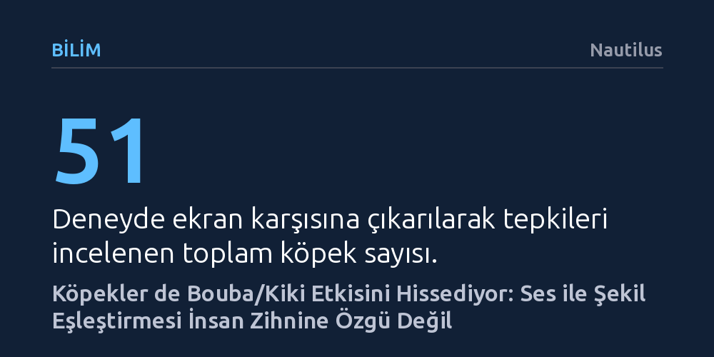

BILIM · Nautilus · 2026-10-16
Yeni bir araştırma, insanların ses tonlarıyla geometrik şekilleri eşleştirdiği 'bouba/kiki' etkisinin köpeklerde de var olduğunu ortaya koydu. Yapay zekayla bakışları izlenen köpekler, 'bouba' sesinde yuvarlak, 'kiki' sesinde ise sivri köşeli figürlere belirgin biçimde daha uzun süre odaklandı.
Sesler ile biçimler arasındaki sezgisel bağın yalnızca insana ve dile özgü olmadığını, kökleri hayvanlar alemine uzanan kadim bir algı mekanizması olabileceğini gösterir.

Önünüze biri yumuşak hatlara sahip kıvrımlı, diğeri ise testere dişi gibi sivri ve keskin iki soyut şekil koysalar; ardından bunlardan birine 'bouba', diğerine 'kiki' demenizi isteseler hangisini seçerdiniz? 1920'lerden bu yana yapılan psikoloji deneyleri, insanların ezici bir çoğunlukla yuvarlak hatlı figürü bouba, köşeli figürü ise kiki ile eşleştirdiğini gösteriyor. İnsan zihninin bu ilginç sezgisi, işittiğimiz ses dalgaları ile gördüğümüz görsel biçimler arasında kendiliğinden sembolik köprüler kurduğumuzu ve dillerin evriminin tamamen rastlantısal olmadığını kanıtlıyor.
Üstelik bu olgu tek bir kültüre ya da dile özgü değil. Dünyanın dört bir yanında farklı dilleri konuşan topluluklar, hatta yazılı dili bulunmayan kabileler dahi aynı testi aynı biçimde yanıtlıyor. Doğuştan görme engelli bireylere bu figürlerin üç boyutlu modelleri dokundurulduğunda da sonuç değişmiyor. Ancak saygın bilim dergisi Proceedings of the Royal Society B: Biological Sciences bünyesinde yayımlanan yeni bir araştırma, bu zihinsel eşleştirmenin sınırlarını türümüzün çok ötesine taşıyarak köpeklerin dünyasına soktu.
Araştırmacılar, köpeklerin de benzer bir ses-şekil ilişkisi kurup kurmadığını anlamak amacıyla 51 köpek ve sahibini özel bir laboratuvar odasına davet etti. Odanın karşılıklı duvarlarına iki ayrı ekran yerleştirildi; ekranların birinde yuvarlak hatlı bouba figürü, diğerinde ise keskin kenarlı kiki figürü gösterildi. Köpekler ortama alıştıktan sonra hoparlörlerden insan sesiyle bu anlamsız sözcükler dinletildi ve hayvanların tepkileri yüksek çözünürlüklü kameralarla anbean kaydedildi.
Hayvan davranış deneylerinde en büyük risklerden biri, sahiplerin farkında olmadan verdikleri mikro beden dili sinyalleriyle hayvanı yönlendirmesidir. Bilim insanları bu ihtimali bertaraf etmek için deneyi titizlikle kurguladı. Katılımcı gruptan 19 köpeğin sahibine dışarıdan gelen sesleri tamamen kesen kulaklıklar takıldı; böylece sahipler hangi kelimenin çalındığını duyamadı ve köpeğin dikkatini istemsizce bir ekrana yönlendirmesinin önüne geçildi.
Köpeklerin ekranlara ne kadar süre ve nereye odaklandığını belirlemek için gelişmiş yapay zeka takip algoritmalarından yararlanıldı. Kameralardan gelen veriler analiz edildiğinde, köpeklerin rastgele etrafa bakmadığı netleşti. Dört ayaklı denekler, hoparlörden 'bouba' sesi yükseldiğinde yuvarlak figürün olduğu ekrana anlamlı biçimde daha uzun süre baktılar. 'Kiki' sesini duyduklarında ise bakışlarını belirgin şekilde sivri köşeli figüre çevirdiler.
Bu bulgu, anlamsız gibi görünen seslerin zihinde yarattığı görsel çağrışımların yalnızca insan diline veya insan beyninin soyutlama yetisine özgü olmadığını ortaya koyuyor. Köpekler, insanların konuştuğu dili anlayamasalar bile seslerin fonetik yumuşaklığı ya da sertliği ile görsel hatların keskinliği arasında bizimkine çok benzer bir bilişsel bağ kurabiliyor.
Aslında bouba/kiki etkisinin hayvanlarda gözlemlendiği ilk çalışma bu değil. Bu yıl yayımlanan bir başka araştırmada, yumurtadan henüz yeni çıkmış civcivlerin de benzer ses-şekil eşleştirmeleri yapabildiği gösterilmişti. Fakat türler arasında ilginç bir algı farkı göze çarpıyor: Civcivler genel olarak yuvarlak şekillere doğal bir ilgi gösterirken, ilk deney grubundaki köpeklerde sivri şekillere doğru bir duyusal yatkınlık gözlemlendi.
Bilim insanları bu farkın evrimsel morfolojiyle ilişkili olabileceğini düşünüyor. İnsan bebeklerinin yüz hatları yuvarlakken, kurtların ve ilkel köpek ırklarının kafa yapısı sivri ve köşeli hatlarla karakterizedir. Araştırma ekibi, hayvanların kafa ve yüz anatomisindeki bu köşeli yapının insan bebeklerindeki yuvarlak hatlardan ayrışarak ters yönde bir algısal yatkınlık yaratabileceğini öne sürüyor. Elbette araştırmacılar bu hipotezin daha geniş örneklemlerle sınanması gerektiğinin altını çiziyor, ancak mevcut veriler bile köpeklerin algı dünyasının düşündüğümüzden çok daha derin olduğunu kanıtlıyor.